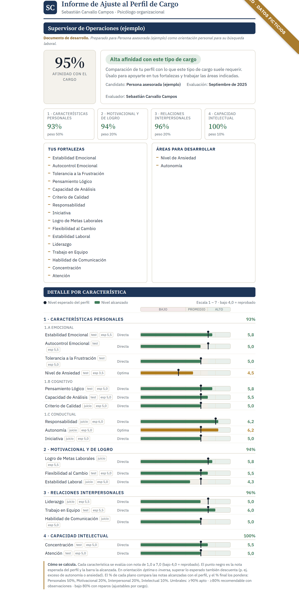
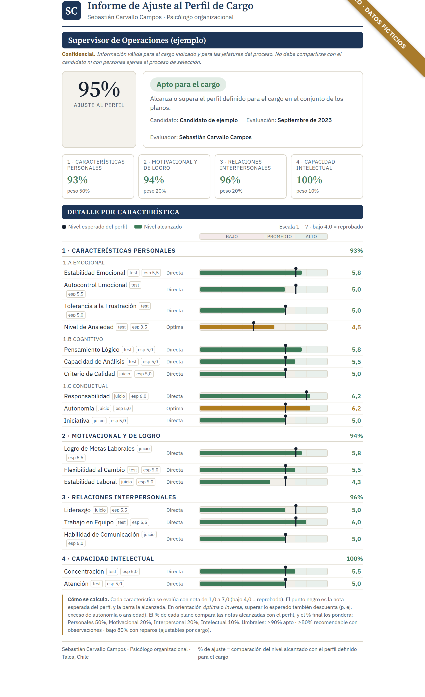

Criterio de reclutador
Sé en qué momento exacto se descarta un perfil, porque lo hice diez años. Tu CV y tu LinkedIn se escriben para pasar ese momento.
Leí los currículums, configuré los filtros y tomé las entrevistas. Ahora uso eso para que tu postulación pase cada filtro: el del ATS, el del reclutador y el de la entrevista.
10+ añosPsicólogo organizacional. Lideró selección en PF Alimentos y CMPC.
Tres piezas que trabajan juntas para que tu postulación llegue a la persona que decide, y que en la entrevista no se caiga.
Sé en qué momento exacto se descarta un perfil, porque lo hice diez años. Tu CV y tu LinkedIn se escriben para pasar ese momento.
Una autoevaluación por competencias, con la misma lógica con la que te van a evaluar. Ves tu % de ajuste al cargo antes de postular.
Trabajas conmigo, no con una plantilla. Preparamos tus respuestas, simulamos la entrevista y te acompaño mientras dure tu proceso.
Volúmenes que obligan a filtrar rápido. Sé en qué momento exacto se descarta un perfil.
SAP SuccessFactors, Hiring Room, Rex+. Configuré esos filtros desde adentro.
Sé qué respuesta convence y cuál suena aprendida de memoria, empezando por la de las debilidades.
El Maule, el norte minero y los procesos remotos para España no son lo mismo.
Eliges el cargo que buscas y respondes un test por competencias. Al instante ves tu % de ajuste, tus fortalezas y lo que puedes desarrollar. Es la misma lógica con la que te van a evaluar, ahora de tu lado.
Es una muestra del método, no un diagnóstico.

Tres casos distintos, y cada uno se arregla de una forma. Cuál es el tuyo lo vemos en la llamada.
Caso 1
Tu CV no está escrito para el ATS que lo filtra, y tu LinkedIn no aparece en las búsquedas que hacen los reclutadores.
Ganando al algoritmo
Caso 2
Te preparaste para conversar, no para ser evaluado. Y la pregunta por las debilidades se responde distinto de como crees.
El candidato elegido
Caso 3
El problema no son los documentos: es tu posicionamiento completo, y eso no se arregla en una sesión.
Mentoría completa
Una videollamada o un teléfono, para ubicar cuál de los tres casos es el tuyo. No preparas nada y no te cuesta nada.
A qué estás postulando, hace cuánto y qué ha pasado hasta ahora.
Te hago las preguntas que uso para encontrarlo. Son pocas y son concretas.
La parte que a casi todos les cambia la forma de postular, incluso si después no trabajamos juntos.
Y cuánto cuesta. Si tu caso se resuelve con un par de correcciones que puedes hacer tú, también te lo digo.
Como parte de la asesoría puedes recibir un informe con tu afinidad al tipo de cargo que buscas: tus fortalezas y las áreas para desarrollar.
Un resultado concreto y medible para enfocar tu búsqueda, con el mismo método que usan las empresas para evaluar.
Porque no cobro lo mismo a alguien que necesita ordenar su currículum que a alguien que va a cuatro sesiones, ni cobro igual en pesos chilenos que en un proceso para el extranjero.
El precio te lo digo completo en la llamada, cuando ya sé qué necesitas. Sin letra chica, y la llamada no te la cobro.
Es el sistema que lee tu CV antes que una persona: SAP SuccessFactors, Hiring Room, Rex+ y otros. Si tu currículum no tiene la estructura y las palabras que reconoce, se descarta sin que nadie lo vea. Yo configuré esos filtros desde adentro.
Sí, en remoto para Latinoamérica y España. WhatsApp si estás en Chile, que contesto el mismo día. Correo si escribes desde fuera, y ajustamos la hora a tu huso horario.
No. Son quince minutos por videollamada o teléfono, no preparas nada y no te cuesta nada.
Te lo digo. Si tu caso se resuelve solo, con un par de correcciones que puedes hacer tú, eso es lo que te recomiendo en la llamada.
Súmate a la base de candidatos. Cuando una empresa me pide un perfil, la reviso antes que cualquier otra cosa: si el tuyo calza con un cargo, te escribo. Es gratis, toma tres minutos y no te compromete a nada.
Empieza por quince minutos. Sales sabiendo qué está viendo un reclutador cuando abre tu perfil, trabajemos juntos o no.
Una mala contratación cuesta meses y dinero. Evalúo a tus candidatos por competencias y te entrego un informe con evidencia de por qué cada persona se ajusta o no al cargo.
Sebastián Carvallo Campos, psicólogo organizacional. Diez años liderando selección en PF Alimentos y CMPC. Talca, Chile — presencial y en remoto para Latinoamérica y España.
Muchas malas contrataciones se deciden por impresión: cayó bien, respondió con soltura, buen currículum. Nada de eso predice cómo va a trabajar.
Evaluar por competencias cambia la pregunta: no "¿me cae bien?", sino "¿qué evidencia hay de que ya hizo lo que el cargo exige?". Eso lo convierto en un informe trazable para que decidas con fundamentos.
Tus candidatos responden una autoprueba por competencias (15 min, online) y yo la cruzo con la entrevista. Obtienes un perfil con % de ajuste al cargo y un informe por competencia: objetivo, rápido y comparable entre candidatos.

Un candidato o todo un proceso.
Traduzco el cargo a competencias y al nivel esperado de cada una, desde el descriptor o una conversación corta.
Entrevista estructurada (STAR): busco situaciones reales que vivió, no respuestas de manual.
Me adapto: cargos operativos, comerciales o profesionales; online o presencial; con tus pruebas o las mías.
Es el criterio de alguien que decidió, diez años, quién entraba a grandes empresas.
Liderando selección en PF Alimentos y CMPC, en procesos masivos de Arica a Punta Arenas.
Matriz por cargo, entrevista STAR e informe fundamentado, aplicados en procesos reales.
También preparo candidatos: sé qué respuesta convence y cuál suena de memoria.
Información consistente y a tiempo, con cada conclusión respaldada en evidencia.
Cuéntame qué cargo necesitas cubrir, cuántos candidatos y para cuándo. Con eso te digo cómo lo abordo y cuánto cuesta, sin compromiso.
Ideal si quieres dejar por escrito el cargo y los tiempos.
sebastian.carvallo@outlook.com